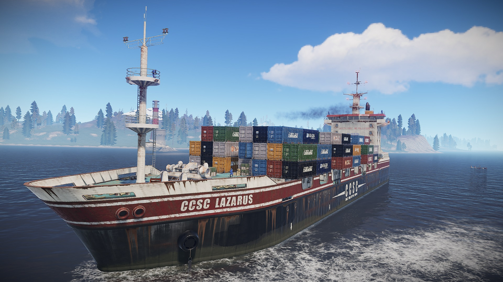

Cargo Ship у Rust
Cargo Ship — це великий корабель, який з'являється на мапі та рухається навколо острова. На ньому знаходиться багато озброєних NPC та цінний лут.
Щоб залутати карго, гравці використовують човни або гелікоптери. Подія дуже небезпечна, бо інші гравці теж намагаються захопити корабель.
Що можна знайти на Cargo Ship
- Військові ящики
- Зброю та патрони
- Елітний лут
Зображення Cargo Ship
(Тут можна вставити картинки)
